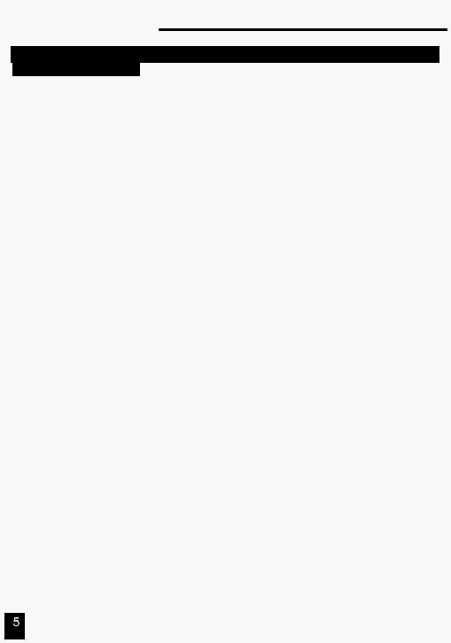
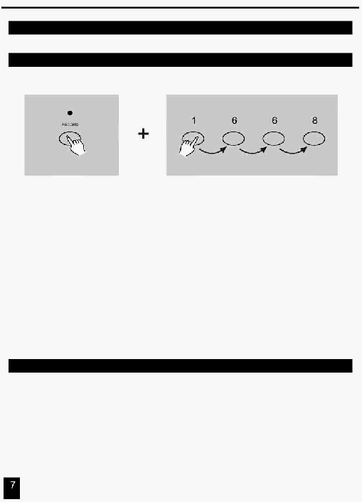
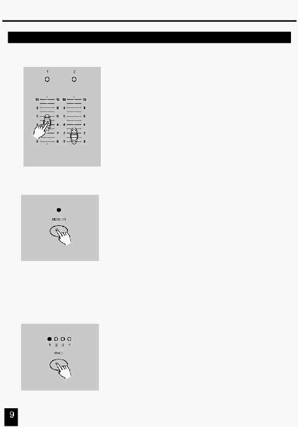
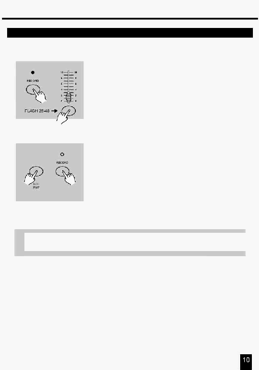
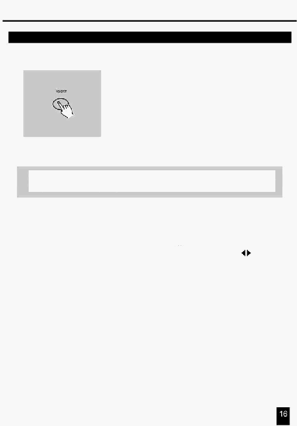
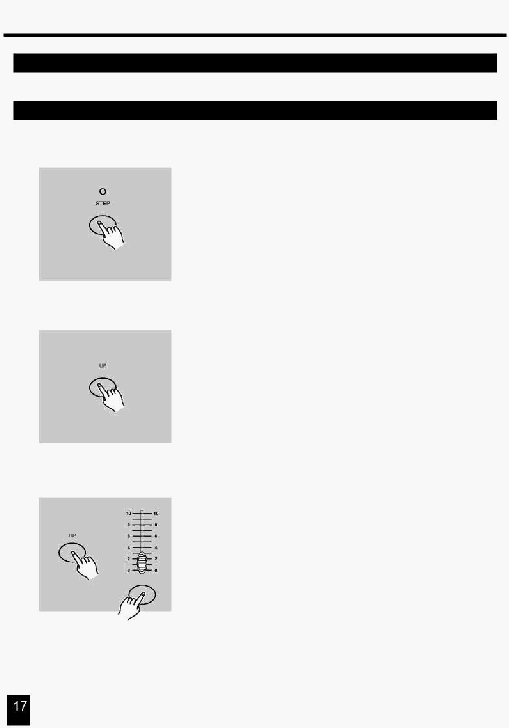
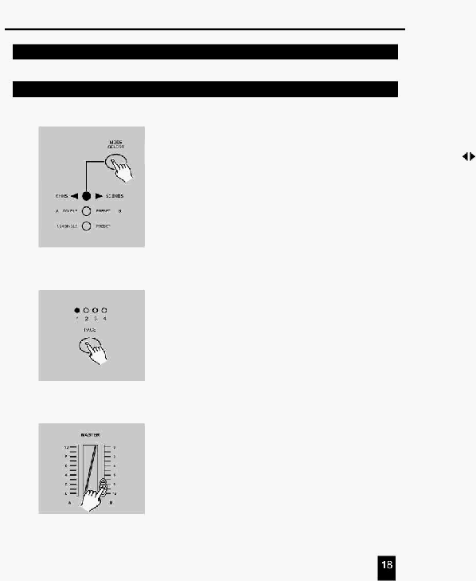
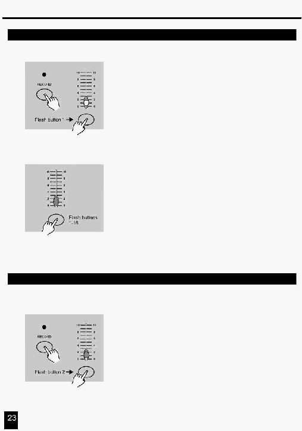

|
Українська
48 канальний пульт керування дімерами
КЕРІВНИЦТВО КОРИСТУВАЧА
Будь ласка, прочитайте перед використанням
|
 Зміст
Особливості 1
Загальні вказівки 2
1. Короткий огляд 3
1.1 Передня панель 3
1.2 Задня панель 6
2. Опис інструкцій 7
2.1 Початок Програмування 7
2.1.1 Дозвіл Запису 7
2.1.2 Безпека Ваших Програм 7
2.1.3 Програмування Сцен 8
2.2 Редагування 11
2.2.1 Редагування Програми 11
2.2.2 Стирання Програми 12
2.2.3 Стирання всіх Програм 13
2.2.4 Очищення Сцени або Сцен 13
2.2.5 Видалення Кроку або Кроків 14
2.2.6 Вставка Кроку або Кроків 15
2.2.7 Модифікація Кроку або Кроків 17
2.3 Виконання 18
2.3.1 Виконання послідовності Програм 18
2.3.2 Запуск Програми від Аудіо входу 19
2.3.3 Запуск Програми з повзунка швидкості 20
2.3.4 Виконання Програми стандартним тактом 21
2.4 Зміна режиму швидкості між
5 Хвилин й 10 Хвилин 22
3. Робота з інтерфейсом MIDI 23
3.1 Установка вхідного каналу MIDI IN 23
3.2 Установка вихідного каналу MIDI OUT 23
3.3 Вихід з режиму установок MIDI 24
3.4 Прийом даних Файлу MIDI 24
3.5 Передача даних Файлу MIDI 25
3.6 Специфіка виконання 25
Резюме головних функцій 27
Технічні характеристики 30
48 канальний
пульт керування
дімерами
Удосконалення й зміни в
специфікації й у цьому
керівництві можуть бути
виконані в будь-який час
без попереднього
повідомлення.
Усі права захищені.
|
 Особливості
Спасибі за Вашу покупку.
Відзначимо наступні особливості
виробу:
Цифрова Технологія.
Пульт керування світлом сцени може управляти як інтелектуальними дімерами, так
і звичайним світлом.
Пам'ять Збоїв по живленню.
Автоматичне поновлення останнього перед вимиканням стану, коли Ви знову
вмикаєте пульт.
Стандартні порти інтерфейсів MIDI й DMX.
Зручність підключення до інших блоків й апаратури.
Потужний редактор Програм.
Ви можете відредагувати будь-яку програму відповідно до своїх потреб.
Програма може містити 4600 кроків, і можуть бути збережені до 96 програм.
Розмаїтість типів виконання Програми.
Ви можете запускати сцени (SCENE) з аудіо входу, повзунка швидкості переходу,
стандартного щиглика й т.д.
Виконання Програм синхронно.
Ви можете виконувати велику кількість програм або послідовно в часі, або
одночасно.
|
 Загальні вказівки
Прочитайте інструкції в
цьому
керівництві ретельно й повністю,
оскільки вони подають важливу інформацію щодо безпеки під час
використання й обслуговування пульта.
Зберігайте це керівництво
поруч із пультом, для консультацій у майбутньому. Якщо пульт
проданий або переданий іншому
операторові, упевніться, що в нього
завжди є керівництво, що дозволяє новому власникові прочитати про
функціонування пульта й виконувані ним інструкції.
Попередження
НЕ допускайте проникнення займистої рідини, води або металевих предметів усередину пульта.
Якщо на пульт пролита будь-яка рідина, негайно ВИМКНІТЬ електроживлення від пульта.
ПРИПИНІТЬ використовувати пульт негайно у випадку серйозних проблем функціонування й зв'яжіться зі своїм
місцевим дилером або зв'яжіться з нами безпосередньо.
НЕ розкривайте пульт - усередині немає ніяких інструментів для його обслуговування.
НІКОЛИ не намагайтеся ремонтувати пульт самостійно. Ремонт некваліфікованим персоналом може викликати
ушкодження або дефектне функціонування. Зв'яжіться з найближчим дилером.
Застереження
Цей пульт НЕ призначений для домашнього використання.
Видаляючи впакування, перевірте, що пульт НЕ ушкоджений. Якщо є сумніви, не використайте його й зв'язуйтеся з
уповноваженим дилером.
Пакувальний матеріал (поліетиленові пакети, пінопласт, цвяхи, і т.д.) НЕ МОЖНА залишати в зоні дитячої
досяжності, оскільки це може бути небезпечно.
Із цим пультом повинні працювати тільки дорослі. НЕ дозволяйте дітям втручатися або грати
с пультом.
НІКОЛИ не використовуйте пульт у наступних умовах:
- у місцях з надмірною вологістю;
- у місцях підданим коливанням або ударам;
- у місцях з температурою вище 45C / 113F або нижче 2C / 35.6F. Захистіть пульт від надмірної сухості або
вологості (ідеальні умови між 35 % й 80 %).
НЕ демонтуйте й не модифікуйте пульт.
|
|
1. Короткий огляд
1.1 Передня панель
|
 1. Короткий огляд
1.1 Передня панель
1. Індикатори A
Показують поточний рівень яскравості відповідного
пронумерованого каналу від 1 до 24.
2. Повзунки каналів 1-24
Ці 24 повзунка використовуються для керування й/або програмування
інтенсивності каналів 1-24.
3.
Кнопки Flash 1-24
Ці 24 кнопки використаються для задання повного рівня яскравості
(СПАЛАХ) індивідуально для кожного каналу 1-24.
4. Індикатори В
Показують поточний рівень яскравості відповідного
пронумерованого каналу від 25 до 48.
5.
Індикатори сцен (SCENE) Світяться, коли відповідні сцени активні.
6. Повзунки каналів 25-48
Ці 24 повзунка використовуються для керування й/або програмування
інтенсивності каналів 25-48.
7.
Кнопки Flash 25-48
Ці 24 кнопки використовуються для задання повного рівня яскравості
(СПАЛАХ) індивідуально для кожного каналу 25-48.
8.
Кнопка Dark
Ця кнопка використовується для миттєвого затемнення всіх виходів.
9.
Кнопка Down/Beat Rev
DOWN функція для модифікації сцени в режимі редагування;
BEAT REV використовується для зворотного напрямку виконання
програми ефекту з постійним тактом.
10.
Кнопка Кожне натискання активує режим роботи в наступному порядку:
Mode Select/Rec Speed CHNS /SCENES, Double Preset й Single Preset.
Rec Speed: Установка швидкості виконання будь-якої програми
виконуваної в режимі мікширування (Mix mode).
11.
Кнопка Up/Chase Rev
Up використовується для модифікації сцени в режимі редагування.
Chase Rev для зміни напрямку виконання сцени під управлінням
повзунка швидкості (Speed Slider).
12.
Кнопка Сторінка
Натискання вибирає сцени зі сторінок 1-4.
13. Кнопка Delete/ Rev One Видаляє будь-який крок зі сцени або змінює напрямок виконання
.. будь-якої програми.
14.
Цифровий Дисплей
Показує поточний режим роботи або стан програмування.
15.
Кнопка
Збільшення – це додавання одного кроку або кроків у сцені.
Insert / % or 0-255 % або 0-255 використовуються для зміни відображуваної на дисплеї
величини або в %, або в цифрах 0-255.
|
|

1. Короткий огляд
1.1 Передня панель
16.
Кнопка Edit/All Rev
Edit використовується, для запуску режиму Редагування.
All Rev – для зміни напрямку виконання всіх Програм.
17.
Кнопка
В режимі Add , додані сцени або кнопки Flash будуть запускатися одним натисканням.
Add or Kill/ Rec Exit У режимі Kill, натискання будь-якої кнопки Flash буде видаляти кілька Сцен або Програм.
Rec Exit використовується для виходу з режимів Програмування або Редагування.
18.
Кнопка Record/ Shift
Record використовується для запуску режиму Запис (Record) або програмування кроку.
Функції Зсуву (Shift) використаються тільки разом з іншими кнопками.
19.
Кнопка Master A
Установлює максимальне поточне значення для каналів 1-12.
20. Кнопка Park
Використовується для вибору Одиничної (Single)/ Складної (Mix) послідовності (Chase),
. установлює максимальне поточне значення для каналів 13-24, або на мить програмує.
. сцену на повзунка Master B, залежно від поточного режиму.
21. Кнопка Hold
Ця кнопка використовується, для продовження поточної сцени.
22
Кнопка Step
Ця кнопка використовується для переходу на наступний крок якщо повзунок (Speed ) у нижнім
положенні або в режимі Редагування.
23. Кнопка Audio
Запускає аудіо синхронізацію послідовності й інтенсивність звукових ефектів.
24. Повзунок Master A
Цей повзунок управляє всіма виходами всіх каналів.
25. Повзунок Master B
Цей повзунок управляє послідовностями всіх Програм.
26. Кнопка Blind
Ця функція забирає канал з послідовності Програми в режимі CHNS/SCENE.
27. Кнопка Home
Ця кнопка використовується для скасування Blind .
28. Кнопка Tap Sync
Повторне натискання цієї кнопки встановлює швидкість послідовності.
29. Кнопка Full On
Ця функція встановлює всі виходи в повну інтенсивність.
30. Кнопка Black Out
Ця кнопка використовується для гасіння всіх виходів крім Flash й Full On.
31. Повзунок Fade Time
Використовується для установки часу переходу (Fade Time).
32. Повзунок Speed
Використовується для регулювання швидкості виконання послідовності.
33. Повзунок Audio Level
Цей повзунок управляє чутливістю Аудіо входу (Audio input).
34. Кнопка Fog Machine Ця кнопка призначена для запуску дим – машини
|
 1. Короткий огляд
1.2 Задня панель
35. Power On /Off Цей перемикач управляє вмиканням або вимиканням живлення пульта.
36. DC Input
Вхід постійного живлення DC 12-20V, 500 m Min.
37. MIDI Thru/Out/In
MIDI порти для підключення секвенсера або MIDI приладу.
38.DMX Out
Через цей роз’єм сигнали DMX інтерфейсу передаються в DMX . .
...………...... розподільник або на DMX стійку.
39. DMX Polarity Select Тумблер для вибору полярності сигналів інтерфейсу DMX.
40. Audio Input
Гніздо для підключення вхідного аудіо сигналу з рівнем від 100m до 1Vpp.
41. Remote Input
Стандартний стерео джек 1/4" для підключення пульта вилученого……
……….... керування функціями Повне вимикання (Black Out) або Повне…….
…………… включення (Full On).
42. Fog Machine Connector Роз’єм підключення Дим-машини
|
|

2. Опис інструкцій
2.1 Початок Програмування
2.1.1 Дозвіл Запису
1. Натисніть й утримуйте кнопку Record (Запис).
2. Утримуючи кнопку Record , послідовно натисніть кнопки Flash 1, 6, 6 й 8.
3. Відпустить кнопку Record, засвітиться індикатор Record, зараз Ви можете почати
програмування послідовності Ваших зразків (patterns).
ПРИМІТКА:
При першому включенні пульта, за замовчуванням, установлений Код Запису (Record Code)
послідовним натисканням кнопок Flash 1, 6, 6 й 8.
Ви можете змінити Код Запису, щоб захистити Ваші програми.
2.1.2 Безпека Ваших Програм
Для захисту Ваших Програм від редагування сторонніми особами Ви можете
змінити Код Запису (Record Code).
1.
Уведіть поточний Код Запису (Record Code) (Кнопки Flash 1,6,6 й 8).
2. Одночасно натисніть й утримуйте кнопки Record й Edit.
|
 2. Опис інструкцій
2.1.2 Безпека Ваших Програм
3. Утримуючи кнопки
Record й Edit, натисніть кнопки Flash для уведення
нового Коду Запису (Record Code).
Код Запису містить послідовно чотири цифри відповідні чотирьом послідовно
натиснутим кнопкам Flash (однаковим або різним), які й складуть нове
значення Коду Запису.
4. Уведіть нове значення Коду Запису повторно, при цьому всі індикатори каналів
і сцен мигнуть три рази, тепер Код Запису змінений.
5. Вихід з режиму Запису (Record). Натисніть кнопку Rec Exit при цьому
натиснувши й утримуючи кнопку Record (Запису).
УВАГА!!!
Завжди пам’ятайте про необхідність виходу з режиму Запису
(
Record
), якщо Ви не хочете продовжувати програмування, інакше
Ви можете втратити контроль над пультом.
ПРИМІТКА:
Якщо при повторному
уведенні Коду Запису він відмінний від першого, то
індикатори мигати не будуть, тому що присутня помилка уведення при зміні
Коду Запису (Record Code).
Якщо при першому
уведенні Коду Запису для його зміни Ви вирішили не
робити цього, то натисніть одночасно кнопки Record й Exit для виходу.
2.1.3 Програмування Сцен
1. Виконайте процедуру Дозвіл Запису.
2. Виберіть Одиничний (Single) 1-48 режим натисканням кнопки
вибору режиму (Mode Select). Це дасть можливість керування
всіма 48 каналами, які Ви програмуєте.
Переконайтеся, що обидва повзунки Master A й B установлені в
максимальне значення.
(Повзунок
Master A
перебуває в крайнім
верхнім
положенні –
максимум повзунка Master A, у той час як повзунок
Master B у
крайнім нижнім положенні – максимум повзунка Master В.)
|
|

2. Опис інструкцій
2.1.3 Програмування Сцен
3. Створіть сцену, використовуючи повзунків
каналів (Channel Sliders) 1-48. В 0% або DMX 0,
ці повзунки будуть у положенні 0, і в 100% або
DMX 255, ці повзунки будуть у положенні 10.
4. Як тільки сцена є задовільною, натисніть кнопку
Record, щоб програмувати сцену як крок в
память.
5. Повторіть крок 3 і крок 4 доти поки всі необхідні
сцени не будуть запрограмовані в пам'яті.
Ви можете запрограмувати до 1000 кроків у пам'яті.
6. Виберіть банк послідовності або повзунок майстра
сцени для збереження Вашої програми. Натисніть
кнопку Page для вибору номера сторінки (Page 1-4) у
якій буде збережені Ваші сцени.
|
|

2. Опис інструкцій
2.1.3 Програмування сцен
7. Натисніть кнопку Flash між 25-48, утримуючи кнопку
Запису (Record). Всі індикатори мигнуть, повідомляючи ,
що сцени запрограмовані в пам'яті.
8. ВИ можете продовжити Програмування або вийти із
цього режиму.
Для виходу з режиму Програмування (Program)
натисніть кнопку Exit, утримуючи натиснутою кнопку
Запису (Record), при цьому згасне індикатор Record.
ПРИКЛАД: Запрограмуйте 16 кроків з повністю уведеними
каналами 1-32 у послідовність на кнопку Flash 25 сторінки
1. Виконайте процедуру Дозвіл Запису.
2. Установіть повзунки Master A й B у максимальне положення й уведіть повзунок Fade.
3. Виберіть Одиничний (Blind) 1-48 режим натисканням кнопки вибору режиму (Mode Select).
4. Установіть повзунок каналу 1 у верхнє положення, його індикатор світиться повною яскравістю.
5. Натисніть кнопку Запису (Record) для програмування цього кроку в пам'яті.
6. Повторіть кроки 4 й 5 доти, поки не будуть запрограмовані повзунки каналів 1-32.
7. Натисніть кнопку (Page), при цьому засвітиться індикатор Page 1.
8. Натисніть кнопку Flash 25 , утримуючи натиснутою кнопку Record, всі індикатори мигнуть,
указуючи, що цей крок запрограмований у пам'яті.
|
 2. Опис інструкцій
2.2 Редагування
2.2.1 Редагування Програми
1.
Виконайте процедуру Дозвіл Запису.
2. Використовуючи кнопку Page виберіть сторінку на якій
розміщена Програма, що Ви бажаєте редагувати.
3. Натисніть кнопку Mode Select і виберіть
CHNS < > SCENES.
4. Натисніть й утримуйте кнопку Edit.
|
  2. Опис інструкцій
2.2.1 Редагування Програми
5. Утримуючи натиснутою кнопку Edit, натисніть кнопку Flash до
якої закріплена Програма, що Ви бажаєте редагувати.
6. Відпустіть кнопку Edit, індикатор відповідної сцени повинен
засвітитися, указуючи, що Ви перебуваєте в
режимі Редагування.
2.2.2 Стирання Програми
1.
Виконайте процедуру Дозвіл Запису.
2.
Використовуючи кнопку Page, виберіть сторінку, на якій розміщена
Програма, що Ви бажаєте стерти.
3.
Утримуючи кнопку Edit, натисніть кнопку Flash (25-48) двічі.
4. Відпустіть дві кнопки, всі індикатори мигнуть, указуючи, що
Програма стерта з пам'яті.
Натисніть цю кнопку двічі
|
|
2. Опис інструкцій
2.2.3 Стирання Всіх Програм
1. Натисніть й утримуйте кнопку Record (Запису).
2. Послідовно натисніть кнопки Flash 1,4,2 й 3, при цьому, утримуючи
кнопку Record. Всі індикатори мигнуть, указуючи, що всі Програми,
що зберігаються в пам'яті, вилучені.
2.2.4 Очищення Сцени або Сцен
1.
Виконайте процедуру Дозвіл Запису.
2. Запишіть Сцену або Сцени.
3.
Якщо Вас не влаштовують записані Сцена або Сцени Ви
можете нажати кнопку Rec Clear у той час, коли Ви нажали й
утримуєте кнопку Record (Запису), при цьому всі індикатори
мигнуть, указуючи , що сцени очищені.
|
 2. Опис інструкцій
2.2 Редагування
2.2.5 Видалення Кроку або Кроків
1.
Увійдіть у режим Редагування.
2. Натисніть кнопку Step (Крок) для
прокручування послідовності Кроків до Кроку,
що Ви хочете видалити.
3.
Натисніть кнопку Delete при досягненні Кроку,
що Ви хочете видалити, всі індикатори
мигнуть, указуючи , що Крок вилучений.
4.
Продовжіть виконувати пункти 2 й 3 доти,
поки не будуть вилучені всі небажані Кроки.
5.
Натисніть кнопку Rec Exit , попередньо
натиснувши й утримуючи кнопку Record
(Запису), індикатор Scene згасне, указуючи
на вихід з режиму Редагування.
|
|
2. Опис інструкцій
2.2 Редагування
2.2.5 Видалення Кроку або Кроків
ПРИКЛАД: Видаліть третій Крок у Програмі на кнопці
Flash
25 на сторінці 2.
1.
Виконайте процедуру Дозвіл Запису.
2. Натисніть кнопку Mode Select для вибору режиму CHNS
SCENE .
3.
Натисніть кнопку Page й утримуйте поки не засвітиться індикатор Page 2.
4.
Натисніть кнопку Flash 25, попередньо натиснувши й утримуючи кнопку Edit,
індикатор Scene - світиться.
5.
Натисніть кнопку Step й утримуйте до третього Кроку.
6.
Натисніть кнопку Delete для видалення Кроку.
7.
Натисніть кнопку Rec Exit, попередньо натиснувши й утримуючи кнопку Record
(Запису) для виходу з режиму Редагування.
2.2.6 Вставка Кроку або Кроків
1. Запишіть Сцену або Сцени, які Ви бажаєте вставити.
2. Переконайтеся, що Ви перебуваєте в режимі CHNS SCENE і
ввійдіть у режим Редагування.
3. Натисніть кнопку Step й утримуйте до досягнення Кроку, перед яким
Ви бажаєте зробити вставку. Номер Кроку Ви можете прочитати на
цифровому дисплеї.
|
|

2. Опис інструкцій
2.2.6 Вставка Кроку або Кроків
4. Натисніть кнопку Insert (Вставка) для вставки Кроку, що
Ви попередньо створили, всі індикатори мигнуть,
указуючи на те, що Крок вставлений.
5.
Вийдіть із режиму Редагування
ПРИКЛАД: Вставте Крок з повністю уведеними
каналами 1-12 між Кроком 4 і Кроком 5 Програми 35.
1.
Виконайте процедуру Дозвіл Запису.
2.
Установіть повзунки Channel 1-12 у верхнє положення й запишіть Сцену як Крок.
3. Натисніть кнопку Mode Select для вибору режиму CHNS
SCENE.
4. Натисніть кнопку Page й утримуйте, поки не засвітиться індикатор Сторінка 2.
5.
Натисніть кнопку Flash 35, попередньо натиснувши й утримуючи кнопку Edit, індикатор
відповідної Сцени світиться.
6.
Натисніть кнопку Step й утримуйте до досягнення Кроку 4.
7.
Натисніть кнопку Insert для вставки попередньо створеної сцени.
|
|

2. Опис інструкцій
2.2 Редагування
2.2.7 Модифікація Кроку або Кроків
1.
Увійдіть у режим Редагування.
2. Натисніть кнопку Step й утримуйте до досягнення Кроку, що
Ви бажаєте модифікувати.
3.
Натисніть й утримуйте кнопку Up для збільшення яскравості
до необхідного рівня.
Якщо Ви бажаєте зменшити яскравість, натисніть й утримуйте
кнопку Down для зменшення яскравості до необхідного рівня.
4. Натисніть кнопку Flash відповідного
каналу інтерфейсу DMX
сцени, що Ви бажаєте змінити, утримуючи натиснутою кнопку
Up або Down до досягнення бажаного рівня яскравості, якому
можна прочитати на цифровому дисплеї. Після цього Ви можете
натиснути кнопки
Flash, поки Ви не будете задоволені новою
сценою..
5.
Повторите пункти 2, 3 й 4 доти, поки не будуть модифіковані всі
кроки.
6.
Вийдіть із режиму Редагування.
|
|

2. Опис інструкцій
2.3 Виконання
2.3.1 Виконання послідовності Програм
1. Натисніть кнопку Mode Select для вибору режиму CHNS
SCENE при цьому засвітиться індикатор червоних
кольорів.
2. Натисніть кнопку Page для вибору сторінки, на якій розміщена
Програма, що Ви бажаєте виконати.
3. Установіть повзунок Master B у максимальне значення
(крайнє нижнє).
|
 2. Опис інструкцій
2.3.1 Виконання послідовності Програм
4. Установіть в максимальне положення повзунок Каналу (25-48),
щоб викликати бажану програму, що буде наростати залежно від
перебігу часу переходу.
Ви можете натиснути й утримувати натиснутою відповідну кнопку
Flash (25-48), щоб викликати виконання бажаної програми.
5. Перемістіть повзунок Channel для установки необхідного рівня
виходу поточної програми.
Перемістіть повзунок Каналу, щоб пристосувати продукцію
2.3.2 Запуск Програми від Аудіо входу
1.
Використайте убудований мікрофон або підключите зовнішнє
джерело аудіо сигналу через гніздо RCA Audio.
2. Виберіть Програму, як описано вище.
3.
Натисніть кнопку Audio поки не засвітиться її індикатор,
указуючи, що запущено режим Audio.
|
 2.
Опис інструкцій
4.
Використайте повзунок Audio Level для установки рівня
спрацьовування.
5. Для повернення в нормальний режим роботи, натисніть
кнопку Audio другий раз, у цьому випадку її індикатор
згасне, що свідчить про скасування режиму Audio.
2.3.3 Запуск Програми з повзунка швидкості (Speed)
1. Переконайтеся, що режим Audio вимкнений й індикатор
Audio не світиться.
2. Виберіть Програму як описано вище.
3. Перемістіть повзунок Speed (Швидкості) у положення
SHOW
MODE (СПОСОБУ ПОКАЗУ) (нижнє положення), потім
натисніть кнопку Flash (25-48), попередньо натиснувши й
утримуючи кнопку
Rec Speed, що відповідає програмі яка
буде запускатися по стандартному ударі.
2.3.2 Запуск Програми від Аудіо входу
|
 2. Опис інструкцій
2.3.3 Запуск Програми з повзунка швидкості (Speed)
4. Тепер Ви можете перемістити повзунок Speed
для вибору необхідної швидкості.
ПРИМІТКА:
Пункт 3 не потрібний, якщо обрана Програма не
записана зі стандартним ударом (Standard Beat).
2.3.4 Запуск Програми зі стандартним тактом (Standard Beat)
1. Переконайтеся, що Audio відключено. Натисніть кнопку
2.
Натисніть кнопку Park для вибору режиму Mix Chase,
засвітиться відповідний індикатор.
3.
Виберіть Програму як описано вище.
4.
Переміщайте повзунок Speed до необхідного значення,
що Ви можете прочитати на цифровому дисплеї.
Ви можете двічі нажати кнопку Tap Sync для визначення
часу такту.
SCENE.
Select для вибору режиму CHNS
|
 2. Опис інструкцій
2.3.4 Запуск Програми зі стандартним тактом (Standard Beat)
5. Натиснувши й утримуючи кнопку Rec Speed, натисніть
кнопку Flash (25-48) до якої прив'язана Програма.
6. Програма буде запущена пізніше із установленим
часом або тактом при переході.
7. Повторіть пункти 4 й 5 для установки нового часу такту.
2.4 Зміна режиму Швидкості (Speed) між 5 й 10 хвилинами
1. Натисніть й утримуйте кнопку Record.
2. Натисніть кнопку Flash 5 або 10 три рази при цьому
втримуючи натиснутою кнопку Record.
3. Засвітиться індикатор 5 MIN або 10 MIN указуючи на те,
що повзунок Speed установлений у режим запуску 5
або10 хвилин.
Натисніть цю
кнопку три рази
|
|

3. Робота з інтерфейсом MIDI
3.1 Установка вхідного каналу MIDI IN
1. Натисніть кнопку Flash 1 три рази, при цьому втримуючи
натиснутою кнопку Record, на цифровому дисплеї
прочитайте "CHI", що вказує на те, що можна робити
установку каналу MIDI IN .
Натисніть цю
кнопку три рази
2. Натисніть кнопку Flash з номером 1-16 для визначення
номера каналу MIDI IN (1-16), індикатор відповідного каналу
засвітиться вказуючи на те, що канал MIDI IN установлений.
3.2 Установка вихідного каналу MIDI OUT
1. Натисніть кнопку Flash 2 три рази, при цьому втримуючи
натиснутою кнопку Record, на цифровому дисплеї
прочитайте "CHО", що вказує на те, що можна робити
установку каналу MIDI OUT.
Натисніть цю
кнопку три рази
|
 3. Робота з інтерфейсом MIDI
3.2 Установка вихідного каналу MIDI OUT
2. Натисніть кнопку Flash з номером 1-16 для визначення
номера каналу MIDI OUT (1-16), індикатор відповідного
каналу засвітиться, указуючи на те, що канал MIDI OUT
установлений.
3.3 Вихід з режиму установок MIDI
Натисніть й утримуйте натиснутою кнопку Record.
Натисніть кнопку Rec Exit, при цьому втримуючи
натиснутою кнопку Record для виходу з установок каналу
MIDI.
3.4 Прийом даних файлу MIDI
Натисніть кнопку Flash
3 три рази, при цьому, утримуючи
натиснутою кнопку Record, на цифровому дисплеї прочитайте
"IN" , що вказує на те, що пульт готовий прийняти дані файлу
MIDI.
Натисніть цю
кнопку три рази
|
|
3. Робота з інтерфейсом MIDI
3.5 Передача даних файлу MIDI
Натисніть кнопку Flash
4 три рази, при цьому, утримуючи
натиснутої кнопку Record, на цифровому дисплеї прочитайте
"OUT", що вказує на те, що пульт готовий передати дані файлу
MIDI.
Натисніть цю
кнопку три рази.
ПРИМІТКА:
1.
Протягом передачі / прийому файлу, всі інші операції не виконуються. Функціонування буде
автоматично відновлено після завершення передачі / прийому файлу.
2.
Передача / прийом файлу будуть автоматично перервані й зупинені при виявленні помилок
або збої по живленню.
3.6 Специфіка виконання
1. У процесі прийому й передачі даних по інтерфейсі MIDI, всі MIDI сцени й канали будуть
автоматично робити паузу, якщо немає ніякої відповіді протягом 10 хвилин.
2. У процесі прийому й передачі файлу, пульт буде автоматично шукати або посилати код
пристрою (Device ID) значенням 55H (85), з ім'ям файлу DC2448 з розширенням
"BIN(SPACE)".
3. Дані файлу MIDI дозволяють пульту посилати свої дані MIDI до наступних блоків
або іншим MIDI приладам.
|
|
3. Робота з інтерфейсом MIDI
3.6 Специфіка виконання
4. У пульті реалізовані два типи режимів обміну файлами, які описані нижче:
Режим незамкнутої петлі
ПУЛЬТ
ПРИЙМАЧ
MIDI OUT
MIDI IN
MIDI OUT
Режим замкнутої петлі
ПУЛЬТ
ПРИЙМАЧ
MIDI OUT
MIDI IN
MIDI OUT
MIDI IN
5. Пульт буде посилати й приймати команди “Note On” (Нота включена) і “Note Off” (Нота виключена) через
кнопки Flash.
Швидкість
Velocity
Майстер Програм
Яскравість
Нота NO
Note NO.
22- 69
70-117
118
119
120
121
122
123
124
125
126
Функція
Functions
Вмик. / Вимик. програм 1-48
Запуск каналу 1-48
Повна яскравість (FULL-ON)
Повне гасіння (DARK)
Захоплення (HOLD)
Вмик. / Вимик. AUDIO
CHNS
SCENES
Режим DOUBLE PRESET
Режим SINGLE PRESET
Крок (Step)
Гасіння виходу BLACK OUT
|
|
4. Резюме Головних Функцій
Зміна напрямку Сцени
1.
Для зміни напрямку всіх Сцен необхідно:
Натиснути кнопку ALL REV, всі Сцени змінять напрямок.
2.
Для зміни напрямку виконання всіх Програм з керуванням швидкістю необхідно:
Натиснути кнопку Chase Rev.
3.
Для зміни напрямку виконання всіх Програм зі Стандартним тактом необхідно:
Натиснути кнопку Beat Rev.
4.
Для зміни напрямку виконання довільної Програми необхідно:
Натиснути й утримувати кнопку Rec One, потім натиснути кнопку Flash відповідній Програмі й відпустити
разом.
Час Переходу
1.
Час, що приділяється Дімеру для переходу від 0 до максимального значення.
2.
Час переходу регулюється повзунком Fade Time, що змінюється в межах 10 хвилин.
Кнопка синхронізації по натисканню (Tap Sync):
1. Кнопка Tap Sync використовується для установки й синхронізації виконання послідовності (коли всі
сцени будуть виконуватися послідовно) шляхом натискання кнопки кілька разів. Послідовність буде
синхронізована часом між двома останніми натисканнями. Індикатор над кнопкою Step
буде мигати з
кожним новим тактом. Тривалість такту може бути встановлена в будь-який час, коли програма
виконується або не виконується.
2.
Синхронізація по натисканню (Tap Sync) буде змінювати будь-яку попередньо встановлену
повзунком Speed до наступного руху повзунка.
3.
Використання синхронізації по натисканню (Tap Sync) з установкою стандартного такту аналогічно
повзункові керування швидкістю Speed.
Майстер-повзунок (Master Slider)
Керування майстер-повзунком (Master Slider) забезпечує пропорційний рівень керування яскравістю на
всіх каналах і у всіх сценах за винятком кнопок Flash. Наприклад:
Якщо майстер-повзунок установлено у мінімум, то всі виходи будуть у нулі (погашені) за винятком тих, у
яких натиснута кнопка
Flash або кнопка повного включення всіх каналів (FULL ON).
Якщо майстер-повзунок установлено на рівні 50%, всі виходи будуть на рівні 50% від поточних значень
каналів або сцен за винятком тих, у яких натиснута кнопка Flash або кнопка повного включення всіх
каналів (FULL ON).
Якщо майстер-повзунок у максимальному положенні, то всі виходи будуть мати встановлені значення.
Повзунок Master A
завжди управляє виходами каналів. Повзунок Master B управляє програмою й сценою
за винятком режиму Double Preset.
|
 4. Резюме Головних Функцій
Одиничний режим (Single Mode)
1.
Всі програми будуть запускатися послідовному порядку відповідно до номера програми.
2. На цифровому дисплеї буде відображатися номер виконуваної програми.
3. Всі програми будуть управлятися повзунком Speed.
4. Натисніть кнопку MODE SELECT і виберіть "CHNS
SCENES".
5. Натисніть кнопку PARK для вибору режиму SINGLE CHASE. При цьому засвітиться червоний
індикатор.
Режим змішування (Mix Mode)
1. Всі програми виконуються синхронно.
2. Всі програми управляються повзунком SPEED, або швидкість будь-якої програми встановлюється
індивідуально. (Дивися Установка Швидкості).
3. Натисніть кнопку MODE SELECT і виберіть "CHNS
SCENES".
4. Натисніть кнопку PARK для вибору режиму мікшування MIX CHASE. При цьому засвітиться
жовтий індикатор.
Цифровий дисплей
1.
Функція затемнення (Blind) тимчасово виключає виходи каналів і дає можливість управляти ними
вручну.
2. Натисніть й утримуйте кнопку Blind і натисніть відповідну кнопку Flash для тимчасового відключення
виходу.
3. Для повернення в нормальний режим роботи натисніть й утримуйте кнопку Home і натисніть
відповідну кнопку Flash виходу, що Ви бажаєте повернути в нормальний режим роботи.
1
Трицифровий дисплей використовується для відображення у відсотках або в абсолютних
значеннях інтерфейсу DMX.
2
Для зміни між відсотками й абсолютними значеннями:
Натисніть й утримуйте кнопку Shift, при цьому натисніть кнопку 0% або 255 для перемикання між
відсотками й абсолютними величинами.
3
Якщо на цифровому дисплеї відображається, наприклад, число “076”, то у відсотках це - 76%,
а в абсолютних величинах це буде число - 76
Затемнення (Blind) і повернення ( Home)
|
 4. Резюме Головних Функцій
Кнопка Park
1. В CHNS
SCENES режимі, натисніть кнопку вибору режиму виконання програм
Між режимом Single і режимом Mix.
2. У режимі Double Preset, натискання цієї кнопки еквівалентно установці повзунка Master B
у верхнє положення.
3. У режимі Single Preset, ця кнопка може тимчасово зберегти поточне значення виходу, з
Повзунка Master B для регулювання.
Кнопка Add and Kill
Кнопка ADD/KILL змінює режим роботи кнопок Flash. Звичайно кнопки Flash
перебувають у режимі Add, тому натискання будь-якої кнопки Flash не видаляє
інші сцени, дозволяючи багатьом сценам виконуватися одночасно.
Режим Kill (видалення) запускається шляхом натискання кнопки Add/Kill й, при
цьому засвітиться індикатор над кнопкою. При натисканні будь-якої кнопки Flash
буде вилучені інша активна сцена або програма.
Кнопка Double Preset
1.
Натисніть кнопку Mode Select і ввійдіть у режим Double Preset.
2.
У цьому режимі, повзунки каналів Channel 1-24 і каналів 25-48 обоє
управляють каналами 1-24.
3.
Повзунок Master A управляє повзунками Channel 1-24 у той час як повзунок
Master B управляє повзунками Channel.
Приклад
1.
Увійдіть у режим Double Preset.
2. Установіть повзунків Channel 1 до 6 у верхнє положення й переміщайте
повзунків Channel 19 до 24 до максимуму.
3. Перемістіть повзунки Master A й B на той самий рівень, перемістіть їх в
одному напрямку, Ви одержите сцену.
|
 Технічні характеристики
Вхід живлення..........................................
DC 12~20V, 500 m хв.
Вихід DMX
................................................
XLR 3 конт. - гніздо
Сигнали MIDI ...........................................
5 конт. стандартний інтерфейс
Аудіо вхід (Audio Input)
...........................100 mV~1Vpp
Запобіжник (внутрішній)..........................
F0.5A 250V 5x20mm
Габарити
..................................................
711x264x85mm
Вага
..........................................................
7.2 kg
Увага!
1.
Для якісного зберігання Ваших програм на цей пульт повинне подаватися
живлення не менш двох годин щомісяця.
2.
Цифровий дисплей показує повідомлення "LOP" при значному зниженні
напруги живлення.
|
 Translated to Ukrainian by A. Teslyuk - +380-671772850
Переклад на українську мову - А. Теслюк - +380-671772850
УСІ ПРАВА ЗАХИЩЕНІ
|